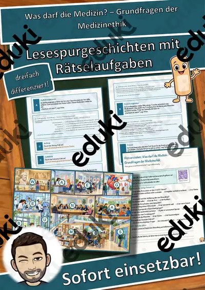
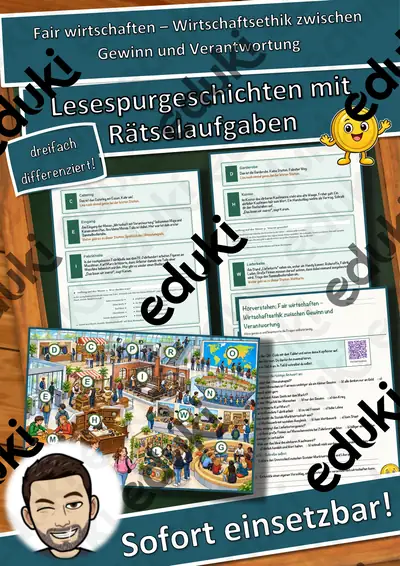
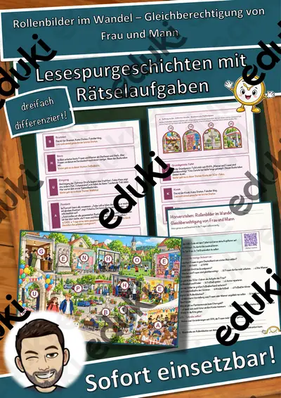
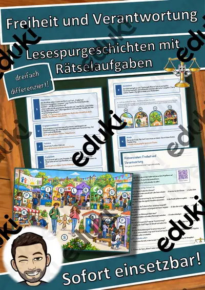
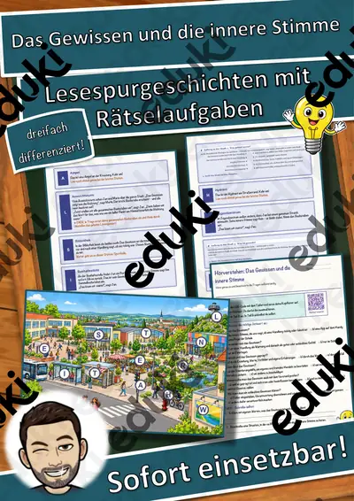
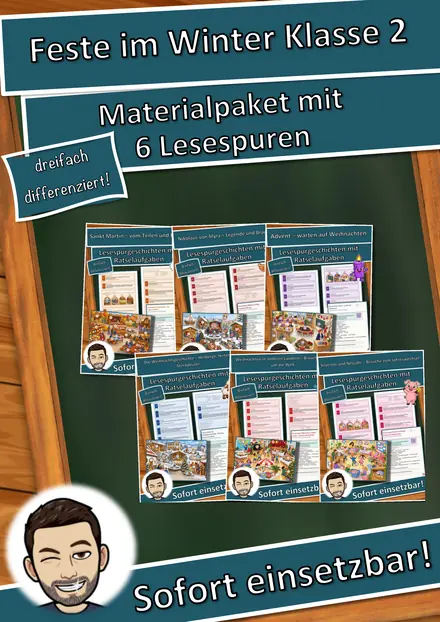
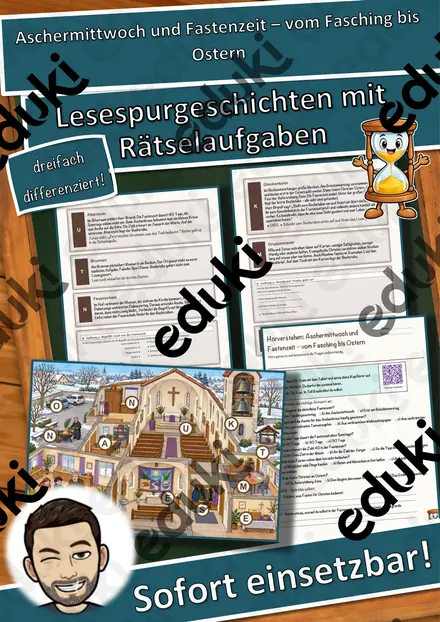

Die Anfänge der Philosophie – eine Zeitreise ins antike Athen – Lesespurgeschichte mit Rätselaufgaben (Klasse 10)
Die Anfänge der Philosophie – eine Zeitreise ins antike Athen – Lesespurgeschichte Ethik (Klasse 10)Begib dich mit deiner Klasse auf eine spannende Lesespur zu den Anfängen der Philosophie! Mit VR-Brillen reisen Clara und Yusuf ins antike Athen vor rund 2 400 Jahren: Am Brunnen lernen sie Thales kennen, der die Welt ohne Göttermythen erklären wollte, auf der Agora verwickelt Sokrates die Menschen in Gespräche, in der Akademie erzählt Platon das Höhlengleichnis, im Lykeion sucht Aristoteles die rechte Mitte, in der Stoa geht es um Gelassenheit und im Garten des Epikur um das Glück. Die kleine Öllampe Lampo leuchtet ihnen den Weg. Am Ende jedes Abschnitts verrät ein Hinweis den nächsten Ort auf dem Athen-Plan – nur wer richtig liest und mitdenkt, findet den Weg und sammelt alle geheimen Buchstaben zum Lösungswort.
Die perfekte Lesespur für den ETHIKUNTERRICHT der 10. Klasse: Sie verbindet motivierendes, sinnentnehmendes Lesen mit einem anschaulichen Einstieg ins Philosophieren – und schult zugleich das genaue Arbeiten. Das Material ist SOFORT EINSETZBAR und in DREI DIFFERENZIERUNGSSTUFEN (leicht ★ / mittel ★★ / schwer ★★★) angelegt, sodass alle Jugendlichen einer Klasse am selben Thema arbeiten können.WICHTIG: Das komplette Material ist sowohl in FARBE als auch in SCHWARZ-WEISS enthalten – ideal zum Sparen von Druckkosten.DAS IST ENTHALTEN
- Lesespurgeschichte in 3 Niveaus (leicht, mittel, schwer)
- farbiger Athen-Plan als Suchkarte
- Hörverstehen mit QR-Code zur MP3 (selbstständiges Hören mit Kopfhörern)
- vier Aufträge auf dem Weg: ein Zuordnungs-Rätsel, ein Quiz, eine Rechenaufgabe und ein Steckbrief
- Rätselseite (Wörter-Suchsel + Wissensfragen)
- Ausmalbild zum Thema
- ausführliches Lösungsblatt für die Lehrkraft
- alles zusätzlich als komplette Schwarz-Weiß-VarianteSO FUNKTIONIERT DIE LESESPURDie Jugendlichen lesen ab START, entnehmen dem Text einen Hinweis auf einen Ort im antiken Athen, suchen ihn auf dem Plan und lesen bei dieser Station weiter. An jeder richtigen Station gibt es einen Sammelbuchstaben. Eingebaute Sackgassen (Hafen, Olivenhain, Werkstatt, Pferdestall) liegen zwar in Athen, sind aber keine Stationen und dienen der Selbstkontrolle. Am Ende werden die gesammelten Buchstaben umgestellt und ergeben ein geheimes Lösungswort. (Die Lösungen sind selbstverständlich nur im Lösungsblatt für die Lehrkraft enthalten.)INHALTLICHER SCHWERPUNKTPhilosophie bedeutet „Liebe zur Weisheit" – und sie beginnt mit dem Staunen und dem Zweifel. Die Jugendlichen erleben, wie das Denken „vom Mythos zum Logos" fand: Thales suchte eine natürliche Erklärung für die Welt statt Göttergeschichten. Sokrates prüfte Meinungen durch geschickte Fragen („Ich weiß, dass ich nichts weiß"), Platon beschrieb im Höhlengleichnis den Weg vom Schein zur Wahrheit, Aristoteles verstand gute Eigenschaften als rechte Mitte zwischen Extremen, die Stoiker empfahlen Gelassenheit gegenüber dem Unabänderlichen, und Epikur sah das Glück in einem Leben ohne Schmerz und Unruhe, mit Freundschaft und Maß. Eine Rechenaufgabe mit Jahreszahlen vor Christus verbindet Geschichte und Mathematik.ABGEDECKTER LEHRPLAN (Klasse 10, Ethik)
- Ethik (LehrplanPLUS Bayern) – „Ursprünge des Philosophierens" (Gymnasium Klasse 10): im Staunen und Zweifeln Anfänge des philosophischen Denkens erkennen, philosophische Fragen von Alltagsfragen unterscheiden, am Beispiel der vorsokratischen Naturphilosophie philosophisches von mythischem Denken unterscheiden und die Gesprächsführung des Sokrates als Möglichkeit erfahren, ethischen Fragen auf den Grund zu gehen.
- Deutsch – Lesen mit Texten und Medien umgehen: Lesestrategien anwenden, Texten gezielt Informationen entnehmen, sinnentnehmend und selektiv lesen; Zuhören: einem Sachhörtext konzentriert folgen (Hörverstehen mit MP3).
- Mathematik – Rechnen im Sachzusammenhang (Zeitrechnung vor Christus).
- Fächerübergreifend / Kompetenzen: Geschichte der Antike, Argumentieren, Urteilsfähigkeit, genaues Lesen und Prüfen, kreatives Gestalten (Ausmalbild).
Geeignet für Freiarbeit, Stationenlernen, Vertretungsstunden, Wochenplan, den Einstieg ins Philosophieren und Homeschooling. Klassenstufe 10 (differenziert einsetzbar auch in angrenzenden Jahrgangsstufen und der Oberstufe).
Ähnliche Materialien

Was darf die Medizin? – Grundfragen der Medizinethik – Lesespurgeschichte mit Rätselaufgaben (Klasse 10)

Fair wirtschaften – Wirtschaftsethik zwischen Gewinn und Verantwortung – Lesespurgeschichte mit Rätselaufgaben (Klasse 10)

Rollenbilder im Wandel – Gleichberechtigung von Frau und Mann – Lesespurgeschichte mit Rätselaufgaben (Klasse 10)

Freiheit und Verantwortung – Lesespurgeschichte mit Rätselaufgaben (Klasse 10)

Das Gewissen und die innere Stimme – Lesespurgeschichte mit Rätselaufgaben (Klasse 10)

Materialpaket Advent und Weihnachten für die 3. Klasse: 8 Lesespurgeschichten mit Rätselaufgaben (Barbarazweige, Lebkuchen, Santa Lucia, Sternsinger & mehr)

Materialpaket Feste im Winter für die 2. Klasse: 6 Lesespurgeschichten mit Rätselaufgaben (Sankt Martin, Nikolaus, Advent, Weihnachten & Silvester)
